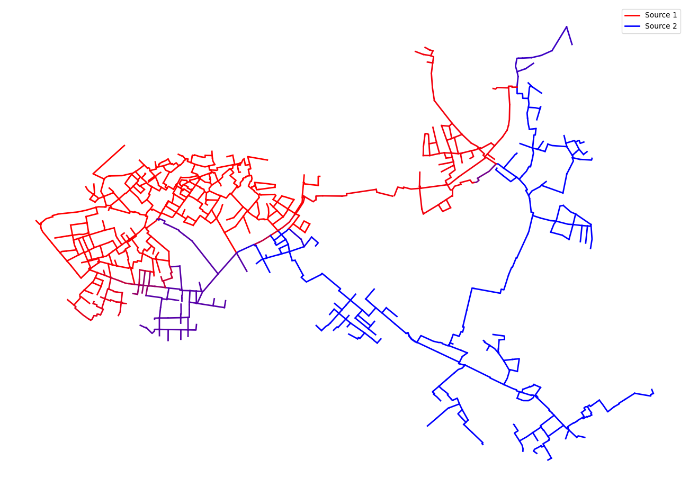
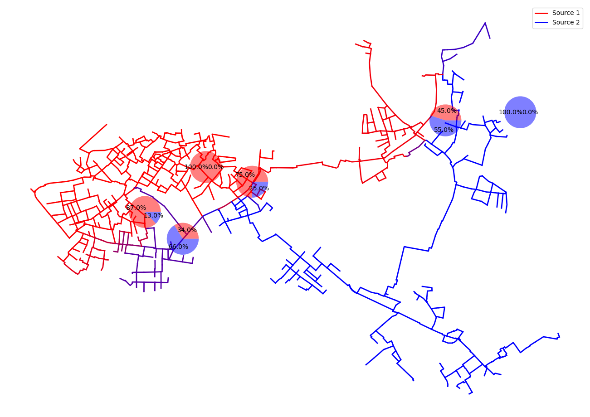
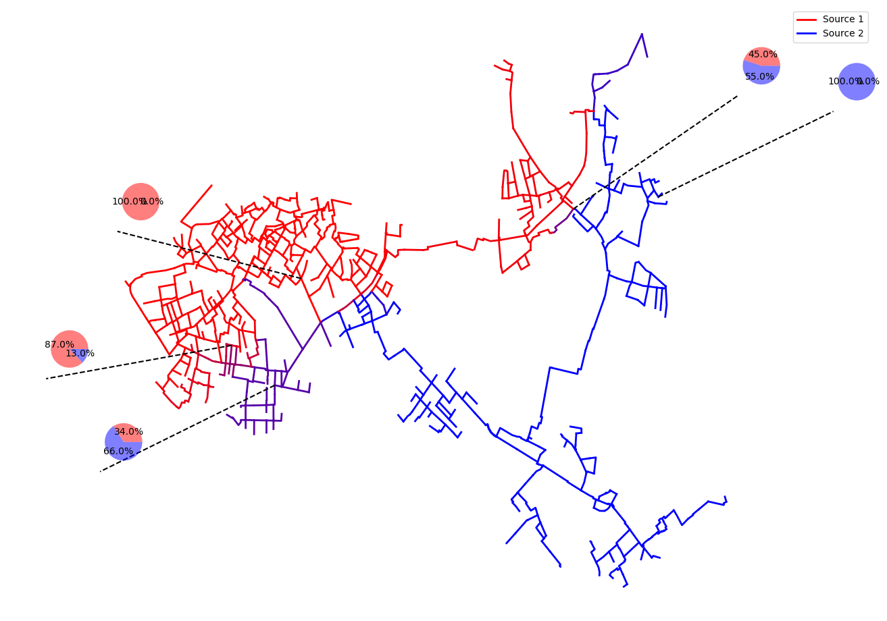

Example 7: Source Spectrum
This example demonstrates how GeoDataFrames (gdfs) and V3_dataframe created by PT3S can be used with matplotlib to create an interactive depiction of a source spectrum.
PT3S Release
[1]:
#pip install PT3S -U --no-deps
Necessary packages for this Example
When running this example for the first time on your machine, please execute the cell below. Afterward, you may need to restart the kernel (using the ‘fast-forward’ button).[2]:
# ...
Imports
[3]:
import os
import logging
import pandas as pd
from pandas import Timestamp
import numpy as np
import matplotlib.pyplot as plt
import pandas as pd
import numpy as np
import matplotlib.pyplot as plt
import geopandas as gpd
from shapely.geometry import LineString, Point
from matplotlib.patches import Circle
import ipywidgets as widgets
#...
try:
from PT3S import dxAndMxHelperFcts
except:
import dxAndMxHelperFcts
try:
from PT3S import Rm
except:
import Rm
try:
from PT3S import ncd
except:
import ncd
#...
[4]:
import importlib
[5]:
#importlib.reload(ncd)
Logging
[6]:
logger = logging.getLogger()
logFileName= r"Example7.log"
loglevel = logging.DEBUG
logging.basicConfig(filename=logFileName
,filemode='w'
,level=loglevel
,format="%(asctime)s ; %(name)-60s ; %(levelname)-7s ; %(message)s")
fileHandler = logging.FileHandler(logFileName)
logger.addHandler(fileHandler)
consoleHandler = logging.StreamHandler()
consoleHandler.setFormatter(logging.Formatter("%(levelname)-7s ; %(message)s"))
consoleHandler.setLevel(logging.INFO)
logger.addHandler(consoleHandler)
Read Model and Results
[7]:
dbFilename="Example5"
dbFile=os.path.join(os.path.dirname(os.path.abspath(dxAndMxHelperFcts.__file__))
+'/Examples/'
+dbFilename
+'.db3'
)
[8]:
m=dxAndMxHelperFcts.readDxAndMx(dbFile=dbFile,preventPklDump=True,maxRecords=-1)#maxRecords=-1
INFO ; Dx.__init__: dbFile (abspath): c:\users\aUserName\3s\pt3s\Examples\Example5.db3 exists readable ...
INFO ; dxAndMxHelperFcts.readDxAndMx:
+..\Examples\Example5.db3 is newer than
+..\Examples\WDExample5\B1\V0\BZ1\M-1-0-1.1.MX1:
+SIR 3S' dbFile is newer than SIR 3S' mx1File
+in this case the results are maybe dated or (worse) incompatible to the model
INFO ; dxAndMxHelperFcts.readDxAndMx:
+..\Examples\WDExample5\B1\V0\BZ1\M-1-0-1.XML is newer than
+..\Examples\WDExample5\B1\V0\BZ1\M-1-0-1.1.MX1:
+SirCalc's xmlFile is newer than SIR 3S' mx1File
+in this case the results are maybe dated or (worse) incompatible to the model
INFO ; dxAndMxHelperFcts.readDxAndMx: running C:\\3S\SIR 3S\SirCalc-90-14-02-10_Potsdam\SirCalc.exe ...
INFO ; Mx.setResultsToMxsFile: Mxs: ..\Examples\WDExample5\B1\V0\BZ1\M-1-0-1.1.MXS reading ...
INFO ; dxWithMx.__init__: Example5: processing dx and mx ...
Preparing Data
[9]:
dfKNOT=m.V3_KNOT
[10]:
dfROHR=m.gdf_ROHR
[11]:
# Get soure signatures for start and end knot
dfROHR['srcvector_fkKI'] = dfROHR['fkKI'].map(dfKNOT.set_index('tk')['srcvector'])
dfROHR['srcvector_fkKK'] = dfROHR['fkKK'].map(dfKNOT.set_index('tk')['srcvector'])
[12]:
QM=('STAT',
'ROHR~*~*~*~QMAV',
Timestamp('2024-01-09 23:00:00'),
Timestamp('2024-01-09 23:00:00'))
[13]:
dfROHR['srcvector_plot'] = np.where(dfROHR[QM] > 0, dfROHR['srcvector_fkKI'], dfROHR['srcvector_fkKK'])
[14]:
dfROHR = dfROHR[dfROHR['KVR'] != 2.0]
Plotting
[15]:
colors = [np.array([255, 0, 0]), np.array([0, 0, 255])]
[16]:
fig, ax = plt.subplots(figsize=Rm.DINA3q)
ncd.plot_src_spectrum(ax, dfROHR,'srcvector_plot', colors)
plt.show()
xlim = ax.get_xlim()
ylim = ax.get_ylim()
canvas_center = ((xlim[0] + xlim[1]) / 2, (ylim[0] + ylim[1]) / 2)
fig.savefig('Example7_Output_1.pdf')

Plot with Pie Charts
Prepara Data
[17]:
dfROHR['srcvector_plot'] = dfROHR['srcvector_plot'].apply(lambda x: tuple(x) if isinstance(x, list) else x)
[18]:
unique_values = dfROHR['srcvector_plot'].unique()
[19]:
df = pd.DataFrame({
'srcvector_plot': unique_values,
'geometry': [dfROHR[dfROHR['srcvector_plot'] == value]['geometry'].iloc[0] for value in unique_values]
})
[20]:
df[['left', 'right']] = pd.DataFrame(df['srcvector_plot'].tolist(), index=df.index)
df['left'] = df['left'].astype(int)
df['right'] = df['right'].astype(int)
[21]:
df['pos'] = df['geometry'].apply(lambda geom: geom.interpolate(0.5) if isinstance(geom, LineString) else None)
[23]:
def create_offset_point_away_from_midpoint(midpoint, canvas_center, scale=0.5):
if midpoint is not None:
# Calculate the direction vector from the canvas center to the midpoint
direction_vector = Point(midpoint.x - canvas_center[0], midpoint.y - canvas_center[1])
# Normalize the direction vector
magnitude = (direction_vector.x**2 + direction_vector.y**2)**0.5
normalized_vector = Point(direction_vector.x / magnitude, direction_vector.y / magnitude)
# Create a point away from the midpoint in the direction away from the canvas center
offset_point = Point(midpoint.x + normalized_vector.x * scale, midpoint.y + normalized_vector.y * scale)
return offset_point
return None
[24]:
df['offset_point'] = df['pos'].apply(lambda pos: create_offset_point_away_from_midpoint(pos, canvas_center, scale=1000))
[25]:
def create_circle_around_offset_point(offset_point, radius=1000):
if offset_point is not None:
return Point(offset_point.x, offset_point.y).buffer(radius)
return None
[26]:
df['circle'] = df['offset_point'].apply(lambda offset_point: create_circle_around_offset_point(offset_point, radius=1000))
[53]:
#df.head()
[28]:
df['helper_line'] = df.apply(lambda row: LineString([row['pos'], row['offset_point'].representative_point()]) if row['offset_point'] is not None else None, axis=1)
[29]:
df = df.sort_values(by='left', ascending=True)
[30]:
colors2=['red','blue']
Plotting Functions
Version 1 interactive
[31]:
def plot_pie_charts_v1(ax, indexes, size=0.3, font_size=10, alpha=0.5):
for index in indexes:
if index < 0 or index >= len(df):
print(f"Index {index} out of range")
continue
x = df['left'].iloc[index]
y = df['right'].iloc[index]
pos = df['pos'].iloc[index]
x = int(x)
y = int(y)
# Only plot if both x and y are at least 15 or both are 0
#if (x >= 15 and y >= 15) or (x == 0 and y == 0):
if pos is not None:
# Place the pie chart at the midpoint of the line
inset_ax = ax.inset_axes([pos.x, pos.y, size, size], transform=ax.transData)
pie_wedges, texts, autotexts = inset_ax.pie([x, y], labels=[' ', ' '], autopct='%1.1f%%', colors=colors2, textprops={'fontsize': font_size})
# Set the alpha value for the pie chart wedges
for wedge in pie_wedges:
wedge.set_alpha(alpha)
Version 1 output
[32]:
def plot_pie_charts_v1_output(ax, indexes, size=0.3, font_size=10, alpha=0.5):
for index in indexes:
if index < 0 or index >= len(df):
print(f"Index {index} out of range")
continue
x = df['left'].iloc[index]
y = df['right'].iloc[index]
pos = df['pos'].iloc[index]
x = int(x)
y = int(y)
if pos is not None:
# Place the pie chart at the midpoint of the line
inset_ax = ax.inset_axes([pos.x, pos.y, size, size], transform=ax.transData)
pie_wedges, texts, autotexts = inset_ax.pie([x, y], labels=[' ', ' '], autopct='%1.1f%%', colors=colors2, textprops={'fontsize': font_size})
# Set the alpha value for the pie chart wedges
for wedge in pie_wedges:
wedge.set_alpha(alpha)
fig.savefig('Example7_Output_2.pdf')
Version 2 interactive
[33]:
def plot_pie_charts_v2(ax, indexes, size=0.3, font_size=10, alpha=0.5):
for index in indexes:
if index < 0 or index >= len(df):
print(f"Index {index} out of range")
continue
x = df['left'].iloc[index]
y = df['right'].iloc[index]
pos = df['pos'].iloc[index]
x = int(x)
y = int(y)
circle = df['circle'].iloc[index]
helper_line = df['helper_line'].iloc[index]
if circle is not None:
# Get the centroid of the circle to place the pie chart
centroid = circle.centroid
# Place the pie chart at the centroid of the circle
inset_ax = ax.inset_axes([centroid.x, centroid.y, size, size], transform=ax.transData)
pie_wedges, texts, autotexts = inset_ax.pie([x, y], labels=[' ', ' '], autopct='%1.1f%%', colors=colors2, textprops={'fontsize': font_size})
# Set the alpha value for the pie chart wedges
for wedge in pie_wedges:
wedge.set_alpha(alpha)
# Plot the helper line from the midpoint to the pie chart
if helper_line is not None:
ax.plot(*helper_line.xy, 'k--', transform=ax.transData)
# Plot all offset points
offset_points = df['offset_point'].dropna()
ax.scatter([point.x for point in offset_points], [point.y for point in offset_points], color='red', label='Offset Points')
Version 2 output
[34]:
def plot_pie_charts_v2_output(ax, indexes, size=0.3, font_size=10, alpha=0.5):
for index in indexes:
if index < 0 or index >= len(df):
print(f"Index {index} out of range")
continue
x = df['left'].iloc[index]
y = df['right'].iloc[index]
pos = df['pos'].iloc[index]
x = int(x)
y = int(y)
circle = df['circle'].iloc[index]
helper_line = df['helper_line'].iloc[index]
if circle is not None:
# Get the centroid of the circle to place the pie chart
centroid = circle.centroid
# Place the pie chart at the centroid of the circle
inset_ax = ax.inset_axes([centroid.x, centroid.y, size, size], transform=ax.transData)
pie_wedges, texts, autotexts = inset_ax.pie([x, y], labels=[' ', ' '], autopct='%1.1f%%', colors=colors2, textprops={'fontsize': font_size})
# Set the alpha value for the pie chart wedges
for wedge in pie_wedges:
wedge.set_alpha(alpha)
# Plot the helper line from the midpoint to the pie chart
if helper_line is not None:
ax.plot(*helper_line.xy, 'k--', transform=ax.transData)
fig.savefig('Example7_Output_3.pdf')
Plotting
Version 1 interactive
[35]:
#count = len(df[((df['left'] >= 15) & (df['right'] >= 15)) | ((df['left'] == 0) & (df['right'] == 0))])
[36]:
def interactive_plot(**kwargs):
fig, ax = plt.subplots(figsize=Rm.DINA3q)
ncd.plot_src_spectrum(ax, dfROHR, 'srcvector_plot', colors)
for i in range(21):
if kwargs[f'Index_{i}']:
plot_pie_charts_v1(ax, [i], size=750, alpha=0.5)
plt.show()
[37]:
checkboxes = {f'Index_{i}': widgets.Checkbox(value=False, description=f'{i}: {df["left"].iloc[i]}/{df["right"].iloc[i]}') for i in range(21)}
[38]:
widgets_interact = widgets.interactive(interactive_plot, **checkboxes)
[39]:
def update_plot(change):
plt.clf()
interactive_plot(**{key: checkboxes[key].value for key in checkboxes})
[40]:
for key in checkboxes:
checkboxes[key].observe(update_plot, names='value')
[41]:
display(widgets_interact)
Version 1 output
[54]:
indexes_to_plot = [0, 5, 6, 9, 13, 20]
[55]:
fig, ax = plt.subplots(figsize=Rm.DINA3q)
ncd.plot_src_spectrum(ax, dfROHR,'srcvector_plot', colors)
plot_pie_charts_v1_output(ax, indexes_to_plot, size=750, alpha=0.5)
plt.show()

Version 2 interactive
[45]:
def interactive_plot_2(**kwargs):
fig, ax = plt.subplots(figsize=Rm.DINA3q)
ncd.plot_src_spectrum(ax, dfROHR, 'srcvector_plot', colors)
for i in range(len(df)):
if kwargs.get(f'Index_{i}', False):
plot_pie_charts_v2(ax, [i], size=750)
plt.show()
[46]:
# Create checkboxes with proportions and index as descriptions
checkboxes_2 = {f'Index_{i}': widgets.Checkbox(value=False, description=f'{i}: {df["left"].iloc[i]}/{df["right"].iloc[i]}') for i in range(21)}
[47]:
widgets_interact_2 = widgets.interactive(interactive_plot_2, **checkboxes_2)
[48]:
def update_plot_2(change):
plt.clf()
interactive_plot_2(**{key: checkboxes_2[key].value for key in checkboxes_2})
[49]:
for key in checkboxes_2:
checkboxes_2[key].observe(update_plot_2, names='value')
[50]:
display(widgets_interact_2)
Version 2 output
[56]:
indexes_to_plot = [0, 5, 6, 9, 13, 20]
[57]:
fig, ax = plt.subplots(figsize=Rm.DINA3q)
ncd.plot_src_spectrum(ax, dfROHR,'srcvector_plot', colors)
plot_pie_charts_v2_output(ax, indexes_to_plot, size=750, alpha=0.5)
plt.show()

[ ]: